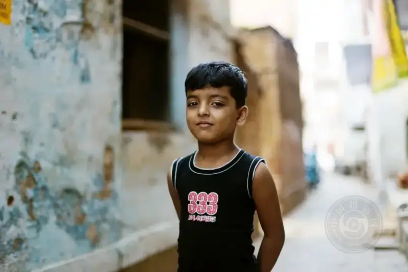
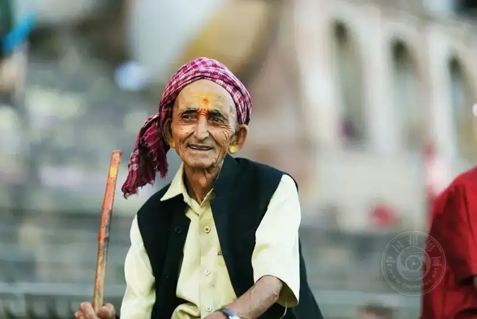
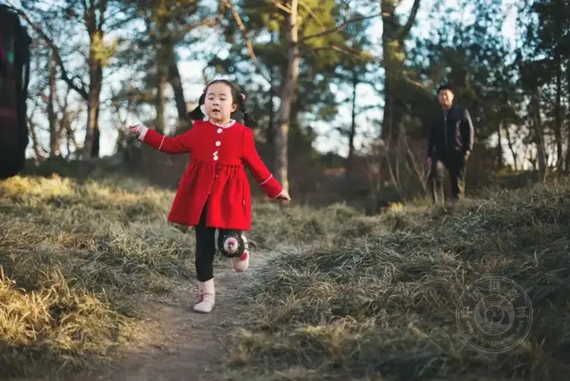

A candid shot is never a secret grab from behind the lens. It is also not a quick glance when someone is not looking.
The best candid shot happens exactly when the person in front of the cameraknows full well, but does not careAt that moment. When they drop their guard toward the lens and let go of the idea of "who they want to play," the photographer can finally wait quietly. Wait for a moment of lowered eyes, or for a casual smile to appear.
Such a photo speaks for itself. It tells you who the person is, what they love, and even what they are thinking right now.
If you want to join this game of truth, bring these seven small habits.
▲ ©Siddharthan Raman
1. Patience is the gentlest wait
Sit down in a square on a corner and stretch the time into a few hours. The crowd comes and goes. You only need to be a quiet observer.
The best frame is often not waited for. It walks itself right up to your lens.

▲ ©Siddharthan Raman
2. The background is the base tone of the story
Try to pick a clean background, or use a wide aperture to blur the clutter into soft bokeh. If you need to move, do it quietly. Do not disturb the person you are watching.
▲ ©Siddharthan Raman
3. Light is an unexpected poem
Dappled daylight passes through leaves and scatters gold on the ground. Such light is beautiful, but it is also willful. Sometimes you cannot tame it. You can only learn to live with it and, as best you can, gather the details in the bright and the shadow into the frame.
▲ ©Siddharthan Raman
4. Burst mode keeps the emotion of that one second
When an expression or reaction appears, do not hesitate. Put the camera in continuous shooting mode. Keep your finger on the shutter, frame after frame, as if you are slicing time thin. One slice will hold the most moving moment.
▲ ©Siddharthan Raman
5. Pre-focusing is a quiet plan
When you sense something interesting about to happen, look away first. Quietly set the focus on a spot at the same distance, press the shutter halfway, and hold your breath. Catch the figure with the corner of your eye. The instant he makes a move, raise the camera quietly and press gently.

▲ ©Siddharthan Raman
6. The lens is your second pair of eyes
Look over the whole scene first, then decide which lens to use. If the background is too busy, let a long lens knead it into blurred color blocks. Keep another lens ready at hand, so you can change the way you look at the world.
▲ ©Siddharthan Raman
7. Children are the most lively subject in the world
Photograph him running, him practicing the piano, him biting a pen and staring into space. They love to play up for the camera. If they perform too hard, put the camera down first. Wait for him to sink back into his own small world. At that moment, quietly raise the camera again.
You will see that focus itself is the best expression.

▲ ©Siddharthan Raman
In the end, candid shooting never requires you to keep your eye to the viewfinder at all times. What you need to do is blend into the scene and become a small, unnoticeable part of the background. Let people forget you are there, and forget the lens is there too.
Then the real them comes through.